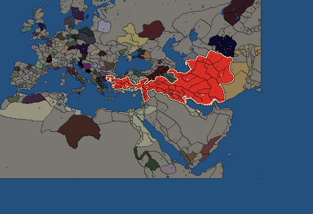

RTR: Imperium Surrectum
RTR: Imperium SurrectumSeleucid Empire


- difficulty Easy
- Eastern Hellenistic culture
- believes
 Macedonian
Macedonian - 61 settlements
- capital Seleucia
- 323,550 manpower
- 61 characters
- 27 faction units
- 438 regional units
The campaign brief
"Fortune favours the bold." – Simonides of Keos
Roughly two decades before the battle of Chaironeia, a noblewoman called Laodike gave birth to her son in the small town Oropos in Macedonia. These days, one can hear the stories that Apollo himself, the god of music and the sun, was the true father of this child. But officially it was the son of Antiochos, a man of the army who hailed from the mountain area of Orestis. That boy was named Seleukos, and with his parents holding close relations to the royal court, he enjoyed a formidable education. Once Seleukos became a teenager, he served as a squire to king Philip II, and upon becoming a man, joined the new royal battle guard, the Hypaspists. After the battle of Chaironeia and the murder of Philip, the Hypaspists accompanied the demigod Alexander on his brave and magnificent adventures in the East. The red-haired hero brought down the empire of Persia, and the Hypaspists followed him through the endless deserts into India. Seleukos emerged not only as an impressive soldier, but also proved his abilities to command and organise. Thus, it was no surprise when the godly Alexander elected him for his elite Companions, the Hetairoi. At the battle on the river called Hydaspes in the mythical land of India, Seleukos commanded part of the right wing of the army and defeated the enemy's monstrous elephants.
Upon their return to Susa, Seleukos married Apame, a woman whose beauty grandly excelled that of her native Sogdia, a rocky badland in the wild northeast. Apame gave birth to Antiochos, the first and most beloved son of Seleukos. It was at this time that the gods on Olympus felt that Alexander had done enough in the world of the mortals, and he died in the palace of Babylon. A most ambitious and very Greek competition between his generals emerged, and Seleukos took part in the early Diadoch wars on the side of the royal regent Perdikkas, but later found an esteemed friend in Ptolemaios, who had become the pharaoh of Egypt. Together they put up a fierce resistance against the mighty Antigonos Monophtalmos, who only had one eye, but the ambition to rule the whole world. They defeated his young son Demetrios at Gaza in 312 BC and Ptolemaios sent his friend eastwards, to reclaim his rule over Babylon. Accompanied by only a small contingent of elite soldiers, Seleukos was joyfully welcomed in that ancient city, and it was then that he laid the foundation for his own empire.
When Antigonos heard of these events, he was furious and started a war against Babylon the following year. But the courageous Seleukos refused to give in and repelled the attacks of the One-Eyed time and again. After his victory, Seleukos advanced eastwards and was acclaimed as the new ruler of these Eastern people, also signing a worthy treaty with Sandrokottos (whom his own people call Chandragupta), the lord of the Indians. The brilliant Seleukos gave him empty deserts in return for 500 terrible war elephants. With those, he strengthened his army and then returned to the West, where he joined Ptolemaios and Lysimachos at the battle of Ipsos in 302 BC. In this heroic engagement, his elephants held off Demetrios Poliorketes' famed cavalry and Antigonos was finally killed. While Demetrios became a refugee and Seleukos was able to annex wide parts of Asia Minor and northern Phoenicia into his dominion, sadly a quarrel emerged between him and his friend, the Pharaoh. Both men, with only the best intentions, laid claim on the strategically important land of Koile Syria. For now, they settled their conflict peacefully, but that did not solve the problem in the long term.
In 286 BC he captured Demetrios and turned on Lysimachos, his last remaining foe, who ruled over his own little empire in Thrace. While Seleukos assembled his troops, rather cheerless news arrived from Alexandria, where the great Ptolemaois had died. His son Ptolemaios II succeeded him as Pharaoh, but his elder son Ptolemaios Keraunos was expelled. Upon arriving in Asia Minor, Seleukos decided to take Keraunos with him, thereby establishing a rather disturbed relationship with Ptolemaios II. The Seleucid Army met Lysimachos in battle at Kouroupedion in 281 BC, and both kings, who had campaigned from Macedon to India and back, and then fought endless further wars over the decades, rode into battle as old men. Seleukos won a decisive victory and Lysimachos paid with his life, which ended after 80 exhausting years. Seleukos now only had one last dream: to return to his native Macedon and hopefully unite it with his empire in the East. But when Keraunos realised what the price was, he betrayed him. The murder of Seleukos, who died, 77 years of age, after having done and achieved more in his life than most men could ever dream of, sent shockwaves through the Hellenistic world.
His son Antiochos thus faced a more than formidable challenge to keep the empire together when he inherited the kingship. Revolts broke out in Syria and Asia Minor; Bithynia and Cappadocia asserted their independence and Keraunos ruled in Macedon. To make bad matters worse, the Gauls ravaged Greece and the Bithynian dastard king invited them into Asia. Not fearing the ferocious Barbarians, Antiochos rode into battle and trampled the Celts with his mighty elephants. Seeing his rival king busy in the North, Ptolemaios II seized the chance and betrayed the old friendship of their fathers to invade Koile Syria only a few months after the Elephant Battle. Bold campaigns from both sides eventually failed, and a year ago Antiochos had to settle for peace with his most powerful foe. Now Damascus and the adjacent regions have fallen into the hands of our enemies, Cappadocia and Bithynia had to be forfeited and the Galatians have settled in central Anatolia.
But Antiochos possesses the greatest kingdom in the known world, and an army made up of the finest Macedonian and Greek soldiers, including the Hetairoi and Hypaspists, but also a vast reserve of native warriors and - of course! - the great herd of elephants who carried the day against the Galatians five years ago. His son has just come of age, the merchants of Antiocheia often travel far into the lands of India to bring the finest luxuries of the world to the court, and Antigonos Gonatas, a friend of Antiochos and rival to Ptolemaios II, now rules as king of Macedonia. The gods still hold a bright future for the Seleucid dynasty, but Antiochos must be wary of his enemies, internal as well as external, and wait for the right moment to strike and reclaim the lost lands in Syria and Asia Minor. May he be guided by Zeus to victory!
Starting settlements
Seleucid Empire begins with 61 settlements and 323,550 manpower.
| Settlement | Region | Size | Manpower | Already built | Settlement | Region | Size | Manpower | Already built |
|---|---|---|---|---|---|---|---|---|---|
| Seleucia (capital) | Mesopotamia | city | 13,000 | 13 buildings | Antioch | Syria | city | 10,500 | 12 buildings |
| Sardis | Lydia | city | 7,500 | 13 buildings | Ikonion | Lykaonia | large town | 4,700 | 10 buildings |
| Tarsos | Kilikia Pedias | large town | 6,900 | 12 buildings | Damascus | Damashq | large town | 4,900 | 10 buildings |
| Arados | Arwad | large town | 5,000 | 10 buildings | Beroia-Syria | Khalab | large town | 5,250 | 10 buildings |
| Apameia-Syria | Apamene | large town | 5,500 | 11 buildings | Arethousa | Emesene | large town | 5,500 | 10 buildings |
| Heliou Polis | Massyas | large town | 5,500 | 10 buildings | Edessa | Osrhoene | large town | 5,500 | 10 buildings |
| Antiocheia-Mygdonia | Mygdonia-Syria | large town | 5,300 | 9 buildings | Nikephorion | Nikephoreia | large town | 5,300 | 9 buildings |
| Is | Ankobaritis | large town | 5,300 | 9 buildings | Assur | Assyria | large town | 5,300 | 9 buildings |
| Chala | Chalonitis | large town | 5,300 | 9 buildings | Artemita | Apolloniatis | large town | 5,300 | 9 buildings |
| Apameia-Sittakene | Sittakene | large town | 5,300 | 9 buildings | Seleukeia-Erythtreia | Chaldaia | large town | 5,300 | 9 buildings |
| Seleukeia-Soloke | Elymais | large town | 5,300 | 9 buildings | Kyropolis-Kadousia | Kadousia | large town | 5,300 | 9 buildings |
| Sareisa | Gordyene | town | 3,500 | 3 buildings | Arbela | Arbelitis | large town | 4,200 | 10 buildings |
| Babylon | Babylonia | large town | 6,000 | 13 buildings | Susa | Sousiane | city | 9,500 | 11 buildings |
| Alexandreia-Charax | Charakene | town | 3,750 | 3 buildings | Ekbatana | Media | city | 9,500 | 13 buildings |
| Gabai | Paraitakene | town | 3,800 | 3 buildings | Europos-Rhagai | Rhagiane | large town | 5,000 | 11 buildings |
| Hekatompylos | Parthia | large town | 4,000 | 11 buildings | Zadrakarta | Boreia Hyrkania | large town | 5,500 | 12 buildings |
| Sirynx-Tambrax | Hyrkania | large town | 5,500 | 12 buildings | Persepolis | Persia | large town | 4,750 | 11 buildings |
| Pasargadai | Pasargadaia | large town | 4,750 | 10 buildings | Alexandreia-Karmania | Karmania | large town | 4,400 | 10 buildings |
| Zetis | Notia Karmania | large town | 4,400 | 11 buildings | Antiocheia-Persis | Taokene | large town | 4,400 | 11 buildings |
| Prophthasia | Anaouon | large town | 4,250 | 10 buildings | Alexandreia-Drangiane | Drangiane | large town | 4,250 | 10 buildings |
| Alexandreia-Ariane | Ariane | large town | 6,000 | 11 buildings | Sousia | Hesperos Ariane | large town | 6,000 | 11 buildings |
| Antiocheia-Margiane | Margiane | large town | 4,250 | 10 buildings | Lysimachia | Kardia | large town | 4,900 | 11 buildings |
| Abydos | Propontis | large town | 4,700 | 9 buildings | Ephesos | Ionia | large town | 7,200 | 12 buildings |
| Apameia-Kelainai | Phrygia | large town | 5,500 | 12 buildings | Gordion | Megale Phrygia | large town | 4,300 | 10 buildings |
| Synnada | Synnadia | large town | 4,300 | 10 buildings | Kybistra | Kappadokike Kilikia | large town | 4,300 | 10 buildings |
| Melita | Melitene | town | 1,800 | 3 buildings | Komana-Kappadokia | Kataonia | town | 1,800 | 3 buildings |
| Daskyleion | Mysia | large town | 4,300 | 10 buildings | Magnesia | Maiandros | large town | 4,300 | 10 buildings |
| Sagalassos | Pisidia | large town | 6,000 | 8 buildings | Side | Pamphylia | large town | 5,800 | 12 buildings |
| Doura-Europos | Tingene | town | 3,500 | 6 buildings | Uruk | Orchoe | large town | 6,750 | 10 buildings |
| Nisa | Nisaia | large town | 4,500 | 10 buildings | Apauarktike | Apauarktikene | large town | 4,500 | 10 buildings |
| Tylos | Tylos | large town | 4,650 | 8 buildings |
What is already built in each settlement
Seleucia, in Mesopotamia: Treasury, Governor's Palace, Small Stone Wall, Grain Export Silos (Food trade), Homeland, Milling District (Urban), Region Information Scroll, Paved Roads, Local Market, River Ports, Basin Irrigation (Crops), Barracks and Armoury, Sewers (Sanitation)
Antioch, in Syria: Fruit Dryer (Rural), Governor's Palace, Small Stone Wall, Homeland, Region Information Scroll, Paved Roads, Local Market, Shipwright, Silk Trader (Urban), Basin Irrigation (Crops), Waystations and Garrisons, Physician's Clinics (Healing)
Sardis, in Lydia: Governor's Palace, Small Stone Wall, Dyes Collectors (Urban), Homeland, Region Information Scroll, Paved Roads, Local Market, River Ports, Vineyard (Rural), Basin Irrigation (Crops), Mines (Industry), Basic Armoury, Sewers (Sanitation)
Ikonion, in Lykaonia: Large Colony, Governor's Villa, Wooden Palisade, Direct Rule, Region Information Scroll, Roads, Local Barter, Highland Pasturing (Husbandry), Local Garrisons, Cisterns (Sanitation)
Tarsos, in Kilikia Pedias: Large Colony, Governor's Villa, Wooden Palisade, Indirect Rule, Region Information Scroll, Roads, Local Barter, Trade Port, Grape Orchards (Rural), Basin Irrigation (Crops), Local Garrisons, Cisterns (Sanitation)
Damascus, in Damashq: Orchards (Rural), Governor's Villa, Wooden Palisade, Dependency, Region Information Scroll, Roads, Local Barter, Slope Pasturing (Husbandry), Local Garrisons, Local Healer (Healing)
Arados, in Arwad: Governor's Villa, Wooden Palisade, Direct Rule, Region Information Scroll, Roads, Local Barter, Trade Port, Open Field Pasturing (Husbandry), Local Garrisons, Cisterns (Sanitation)
Beroia-Syria, in Khalab: Large Colony, Governor's Villa, Wooden Palisade, Direct Rule, Region Information Scroll, Roads, Local Barter, Slope Pasturing (Husbandry), Training Grounds, Cisterns (Sanitation)
Apameia-Syria, in Apamene: Governor's Villa, Wooden Palisade, Homeland, Region Information Scroll, Roads, Local Barter, Olive Grove (Rural), Trade Port, Basin Irrigation (Crops), Training Grounds, Cisterns (Sanitation)
Arethousa, in Emesene: Governor's Villa, Wooden Palisade, Homeland, Region Information Scroll, Roads, Local Barter, Olive Grove (Rural), Basin Irrigation (Crops), Training Grounds, Cisterns (Sanitation)
Heliou Polis, in Massyas: Governor's Villa, Wooden Palisade, Homeland, Region Information Scroll, Roads, Local Barter, Olive Grove (Rural), Basin Irrigation (Crops), Training Grounds, Cisterns (Sanitation)
Edessa, in Osrhoene: Large Colony, Governor's Villa, Wooden Palisade, Direct Rule, Region Information Scroll, Roads, Local Barter, Nomad Communal Herding (Husbandry), Training Grounds, Cisterns (Sanitation)
Antiocheia-Mygdonia, in Mygdonia-Syria: Governor's Villa, Wooden Palisade, Homeland, Region Information Scroll, Roads, Local Barter, Slope Pasturing (Husbandry), Training Grounds, Cisterns (Sanitation)
Nikephorion, in Nikephoreia: Governor's Villa, Wooden Palisade, Homeland, Region Information Scroll, Roads, Local Barter, Slope Pasturing (Husbandry), Training Grounds, Cisterns (Sanitation)
Is, in Ankobaritis: Governor's Villa, Wooden Palisade, Homeland, Region Information Scroll, Roads, Local Barter, Slope Pasturing (Husbandry), Training Grounds, Cisterns (Sanitation)
Assur, in Assyria: Governor's Villa, Wooden Palisade, Homeland, Region Information Scroll, Roads, Local Barter, Slope Pasturing (Husbandry), Training Grounds, Cisterns (Sanitation)
Chala, in Chalonitis: Governor's Villa, Wooden Palisade, Homeland, Region Information Scroll, Roads, Local Barter, Slope Pasturing (Husbandry), Training Grounds, Cisterns (Sanitation)
Artemita, in Apolloniatis: Governor's Villa, Wooden Palisade, Homeland, Region Information Scroll, Roads, Local Barter, Slope Pasturing (Husbandry), Training Grounds, Cisterns (Sanitation)
Apameia-Sittakene, in Sittakene: Governor's Villa, Wooden Palisade, Homeland, Region Information Scroll, Roads, Local Barter, Slope Pasturing (Husbandry), Training Grounds, Cisterns (Sanitation)
Seleukeia-Erythtreia, in Chaldaia: Governor's Villa, Wooden Palisade, Homeland, Region Information Scroll, Roads, Local Barter, Slope Pasturing (Husbandry), Training Grounds, Cisterns (Sanitation)
Seleukeia-Soloke, in Elymais: Governor's Villa, Wooden Palisade, Homeland, Region Information Scroll, Roads, Local Barter, Slope Pasturing (Husbandry), Training Grounds, Cisterns (Sanitation)
Kyropolis-Kadousia, in Kadousia: Governor's Villa, Wooden Palisade, Homeland, Region Information Scroll, Roads, Local Barter, Slope Pasturing (Husbandry), Training Grounds, Cisterns (Sanitation)
Sareisa, in Gordyene: Governor's House, Dependency, Region Information Scroll
Arbela, in Arbelitis: Governor's Villa, Wooden Palisade, Dependency, Region Information Scroll, Roads, Horse Trainer (Rural), Local Barter, Irrigation Ditches (Crops), Local Garrisons, Cisterns (Sanitation)
Babylon, in Babylonia: Large Colony, Governor's Villa, Date Palm Plantation (Rural), Wooden Palisade, Small Granary (Food trade), Indirect Rule, Milling District (Urban), Region Information Scroll, Roads, Local Barter, Basin Irrigation (Crops), Local Garrisons, Cisterns (Sanitation)
Susa, in Sousiane: Large Colony, Governor's Palace, Small Stone Wall, Direct Rule, Milling District (Urban), Region Information Scroll, Paved Roads, Local Market, Basin Irrigation (Crops), Waystations and Garrisons, Physician's Clinics (Healing)
Alexandreia-Charax, in Charakene: Governor's House, Direct Rule, Region Information Scroll
Ekbatana, in Media: Large Colony, Governor's Palace, Small Stone Wall, Direct Rule, Region Information Scroll, Paved Roads, Fine Horses Exports (Rural), Local Market, Silk Trader (Urban), Basin Irrigation (Crops), Mines (Industry), Waystations and Garrisons, Sewers (Sanitation)
Gabai, in Paraitakene: Governor's House, Dependency, Region Information Scroll
Europos-Rhagai, in Rhagiane: Orchards (Rural), Large Colony, Governor's Villa, Wooden Palisade, Direct Rule, Region Information Scroll, Roads, Local Barter, Irrigation Ditches (Crops), Local Garrisons, Cisterns (Sanitation)
Hekatompylos, in Parthia: Large Colony, Governor's Villa, Date Palm Plantation (Rural), Wooden Palisade, Direct Rule, Region Information Scroll, Roads, Local Barter, Qanat Well (Crops), Local Garrisons, Local Healer (Healing)
Zadrakarta, in Boreia Hyrkania: Large Colony, Governor's Villa, Wooden Palisade, Direct Rule, Region Information Scroll, Roads, Horse Trainer (Rural), Local Barter, Trade Port, Slope Pasturing (Husbandry), Local Garrisons, Cisterns (Sanitation)
Sirynx-Tambrax, in Hyrkania: Large Colony, Governor's Villa, Wooden Palisade, Direct Rule, Region Information Scroll, Roads, Horse Trainer (Rural), Local Barter, Trade Port, Slope Pasturing (Husbandry), Local Garrisons, Cisterns (Sanitation)
Persepolis, in Persia: Governor's Villa, Wooden Palisade, Direct Rule, Region Information Scroll, Roads, Local Barter, Trade Port, Grape Orchards (Rural), Irrigation Ditches (Crops), Local Garrisons, Cisterns (Sanitation)
Pasargadai, in Pasargadaia: Governor's Villa, Wooden Palisade, Direct Rule, Region Information Scroll, Roads, Local Barter, Grape Orchards (Rural), Irrigation Ditches (Crops), Local Garrisons, Cisterns (Sanitation)
Alexandreia-Karmania, in Karmania: Large Colony, Governor's Villa, Date Palm Plantation (Rural), Wooden Palisade, Direct Rule, Region Information Scroll, Roads, Local Barter, Qanat Well (Crops), Training Grounds
Zetis, in Notia Karmania: Large Colony, Governor's Villa, Date Palm Plantation (Rural), Wooden Palisade, Direct Rule, Region Information Scroll, Roads, Local Barter, Trade Port, Qanat Well (Crops), Training Grounds
Antiocheia-Persis, in Taokene: Large Colony, Governor's Villa, Date Palm Plantation (Rural), Wooden Palisade, Direct Rule, Region Information Scroll, Roads, Local Barter, Trade Port, Qanat Well (Crops), Training Grounds
Prophthasia, in Anaouon: Large Colony, Governor's Villa, Wooden Palisade, Direct Rule, Region Information Scroll, Roads, Local Barter, Nomad Communal Herding (Husbandry), Local Garrisons, Cisterns (Sanitation)
Alexandreia-Drangiane, in Drangiane: Large Colony, Governor's Villa, Wooden Palisade, Direct Rule, Region Information Scroll, Roads, Local Barter, Nomad Communal Herding (Husbandry), Local Garrisons, Cisterns (Sanitation)
Alexandreia-Ariane, in Ariane: Orchards (Rural), Large Colony, Governor's Villa, Wooden Palisade, Direct Rule, Region Information Scroll, Roads, Local Barter, Irrigation Ditches (Crops), Local Garrisons, Local Healer (Healing)
Sousia, in Hesperos Ariane: Orchards (Rural), Large Colony, Governor's Villa, Wooden Palisade, Direct Rule, Region Information Scroll, Roads, Local Barter, Irrigation Ditches (Crops), Local Garrisons, Local Healer (Healing)
Antiocheia-Margiane, in Margiane: Large Colony, Governor's Villa, Wooden Palisade, Direct Rule, Region Information Scroll, Roads, Local Barter, Irrigation Ditches (Crops), Local Garrisons, Cisterns (Sanitation)
Lysimachia, in Kardia: Governor's Villa, Wooden Palisade, Dependency, Region Information Scroll, Roads, Local Barter, Trade Port, Grape Orchards (Rural), Irrigation Ditches (Crops), Local Garrisons, Cisterns (Sanitation)
Abydos, in Propontis: Governor's Villa, Wooden Palisade, Dependency, Region Information Scroll, Roads, Local Barter, Trade Port, Slope Pasturing (Husbandry), Local Garrisons
Ephesos, in Ionia: Governor's Villa, Wooden Palisade, Dependency, Region Information Scroll, Roads, Local Barter, Herb gatherer (Urban), Trade Port, Grape Orchards (Rural), Irrigation Ditches (Crops), Local Garrisons, Local Healer (Healing)
Apameia-Kelainai, in Phrygia: Large Colony, Governor's Villa, Wooden Palisade, Direct Rule, Region Information Scroll, Roads, Local Barter, Olive Grove (Rural), Irrigation Ditches (Crops), Marble Pit (Industry), Training Grounds, Cisterns (Sanitation)
Gordion, in Megale Phrygia: Small Colony, Governor's Villa, Wooden Palisade, Indirect Rule, Region Information Scroll, Roads, Local Barter, Irrigation Ditches (Crops), Local Garrisons, Cisterns (Sanitation)
Synnada, in Synnadia: Small Colony, Governor's Villa, Wooden Palisade, Indirect Rule, Region Information Scroll, Roads, Local Barter, Irrigation Ditches (Crops), Local Garrisons, Cisterns (Sanitation)
Kybistra, in Kappadokike Kilikia: Small Colony, Governor's Villa, Wooden Palisade, Indirect Rule, Region Information Scroll, Roads, Local Barter, Irrigation Ditches (Crops), Local Garrisons, Cisterns (Sanitation)
Melita, in Melitene: Governor's House, Homeland, Region Information Scroll
Komana-Kappadokia, in Kataonia: Governor's House, Homeland, Region Information Scroll
Daskyleion, in Mysia: Small Colony, Governor's Villa, Wooden Palisade, Indirect Rule, Region Information Scroll, Roads, Local Barter, Irrigation Ditches (Crops), Local Garrisons, Cisterns (Sanitation)
Magnesia, in Maiandros: Small Colony, Governor's Villa, Wooden Palisade, Indirect Rule, Region Information Scroll, Roads, Local Barter, Irrigation Ditches (Crops), Local Garrisons, Cisterns (Sanitation)
Sagalassos, in Pisidia: Governor's Villa, Wooden Palisade, Dependency, Region Information Scroll, Roads, Local Barter, Slope Pasturing (Husbandry), Cisterns (Sanitation)
Side, in Pamphylia: Small Colony, Governor's Villa, Wooden Palisade, Indirect Rule, Region Information Scroll, Roads, Local Barter, Trade Port, Lumber Camp (Rural), Slope Pasturing (Husbandry), Local Garrisons, Cisterns (Sanitation)
Doura-Europos, in Tingene: Small Colony, Governor's House, Direct Rule, Region Information Scroll, Local Barter, Cisterns (Sanitation)
Uruk, in Orchoe: Orchards (Rural), Governor's Villa, Wooden Palisade, Dependency, Region Information Scroll, Roads, Local Barter, Basin Irrigation (Crops), Local Garrisons, Local Healer (Healing)
Nisa, in Nisaia: Small Colony, Governor's Villa, Wooden Palisade, Indirect Rule, Region Information Scroll, Roads, Horse Trainer (Rural), Local Barter, Water Covenants (Husbandry), Training Grounds
Apauarktike, in Apauarktikene: Small Colony, Governor's Villa, Wooden Palisade, Indirect Rule, Region Information Scroll, Roads, Horse Trainer (Rural), Local Barter, Water Covenants (Husbandry), Training Grounds
Tylos: Camel Herd (Rural), Governor's Villa, Wooden Palisade, Homeland, Region Information Scroll, Roads, Local Barter, Nomad Communal Herding (Husbandry)
Homeland
Seleucid Empire's homeland is 6 regions. Only there can it install the Homeland government (more on homelands).

Arsinoites Nomos · Emathia · Magnesia · Mareotis · Syria · Thinites Nomos
Starting diplomacy
Protectorates (4):  Aradus ·
Aradus ·  Characene ·
Characene ·  Lysiad Kingdom ·
Lysiad Kingdom ·  Persis
Persis
Allied with (7):  Antigonid Kingdom ·
Antigonid Kingdom ·  Armenia ·
Armenia ·  Bactria ·
Bactria ·  Cappadocia ·
Cappadocia ·  Cyrene ·
Cyrene ·  Odrysian Kingdom ·
Odrysian Kingdom ·  Pergamon
Pergamon
Trade agreements with (11):  Antigonid Kingdom ·
Antigonid Kingdom ·  Aradus ·
Aradus ·  Armenia ·
Armenia ·  Bactria ·
Bactria ·  Cappadocia ·
Cappadocia ·  Characene ·
Characene ·  Cyrene ·
Cyrene ·  Lysiad Kingdom ·
Lysiad Kingdom ·  Odrysian Kingdom ·
Odrysian Kingdom ·  Pergamon ·
Pergamon ·  Persis
Persis
At war with (1):  Bithynia
Bithynia
Like every faction, it is also at war with the  Free Peoples, who hold every settlement no faction does.
Free Peoples, who hold every settlement no faction does.
Starting characters
| Name | Role | Age | Name | Role | Age | Name | Role | Age | Name | Role | Age |
|---|---|---|---|---|---|---|---|---|---|---|---|
| Antiochos | General | 53 | Seleukos | General | 23 | Achaios | General | 47 | Antipatros | General | 42 |
| Kotys | General | 45 | Anchises | General | 53 | Deiotaros | General | 60 | Kilasarbes | General | 44 |
| Apollodoros | General | 27 | Timarchos | General | 22 | Antiochos | General | 16 | Theodotas | General | 45 |
| Andragoras | General | 30 | Philotas | General | 17 | Nenis | General | 55 | Smerdis | General | 45 |
| Dryenes | General | 44 | Kousios | General | 41 | Marsias | General | 51 | Baias | General | 26 |
| Choirilos | General | 24 | Abantidas | General | 27 | Asphalion | General | 32 | Menedamos | General | 28 |
| Polythros | General | 26 | Gyras | General | 32 | Kallisthenes | General | 37 | Karos | General | 49 |
| Antipatros | General | 42 | Polybios | General | 53 | Kleitos | General | 28 | Admatos | General | 27 |
| Akylos | General | 23 | Kamnaskires | General | 33 | Anchises | General | 22 | Kleades | General | 47 |
| Leonatos | General | 36 | Anu-uballit-Nikarchos | General | 24 | Kassandros | General | 42 | Andromachos | General | 20 |
| Bodas | General | 46 | Deinokratis | General | 48 | Koinos | General | 39 | Ariphron | General | 33 |
| Biggus Dickus | General | 27 | Biggus Dickus | General | 27 | Polyperchon | General | 27 | Polythros | General | 25 |
| Kleisthenes | General | 32 | Paramonos | General | 27 | Kleades | General | 42 | Neoptolemos | General | 29 |
| Melanthios | General | 47 | Amophaon | General | 42 | Banabelos | General | 51 | Philomelos | General | 49 |
| Lysias | General | 21 | Bakis | General | 31 | Agis | General | 24 | Deukalos | General | 27 |
| Baalyathon | General | 33 |
Faction mechanics
From the game's own guide. See also the other game guides.
Special Mechanics
The Seleucids have four mercenary centres in Seleucia, Antioch, Ekbatana and Sardis, check its Region Information Buildings for more details.
Military reforms
The Seleucid Empire has four reforms.
Seleucid reforms 1 requirements: recruit 14 mercenaries
Unlocks: Chrysaspides, Seleucid Thorakitai, Neo-Cretan Archers
Seleucid reforms 2 requirements: 5 battles against Parni
Unlocks: Seleucid Cataphracts, Seleucid Late General
Seleucid reforms 3 requirements: 5 battles against Rome and Romans must own at least 5 cities in Greece.
Unlocks: Seleucid Argyraspides (Reform Swordsmen)
Thracian Sica Cavalry Reform requirements: 75 Turns
Reforms
- Adoption of the Thorakitai
- Military Innovations from the East
- The Daphne Reforms
- Thracian Sica Cavalry Reforms
For every faction: Military innovations have arrived!, Second wave of military innovations have arrived!.
Units you can recruit
The same as in the main campaign.